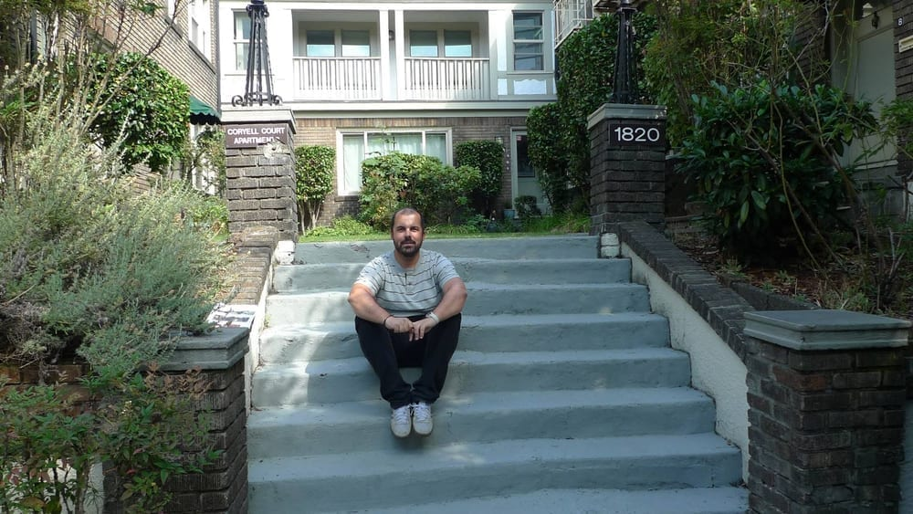
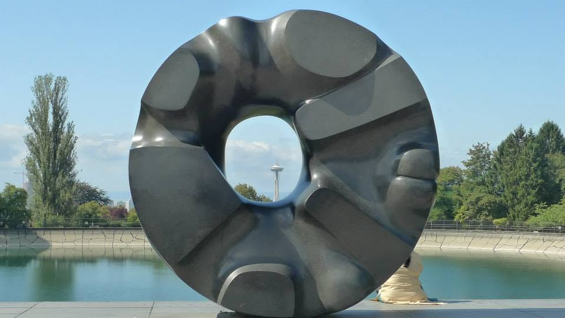
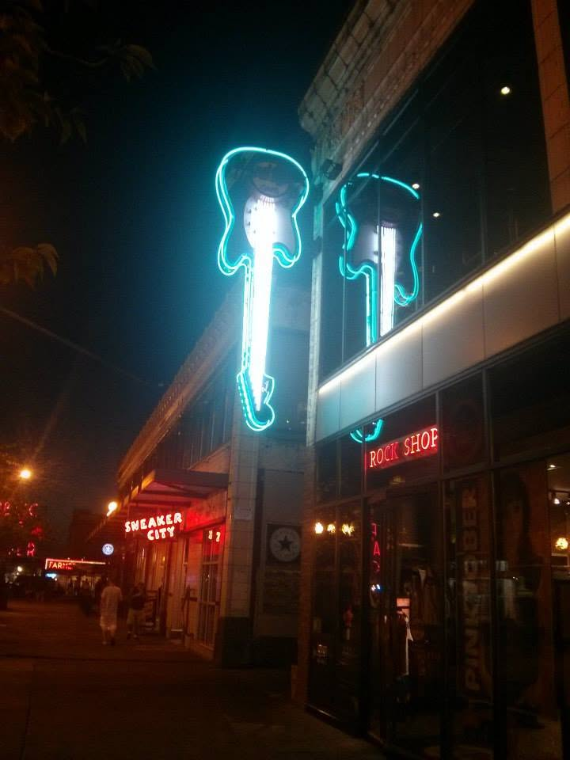
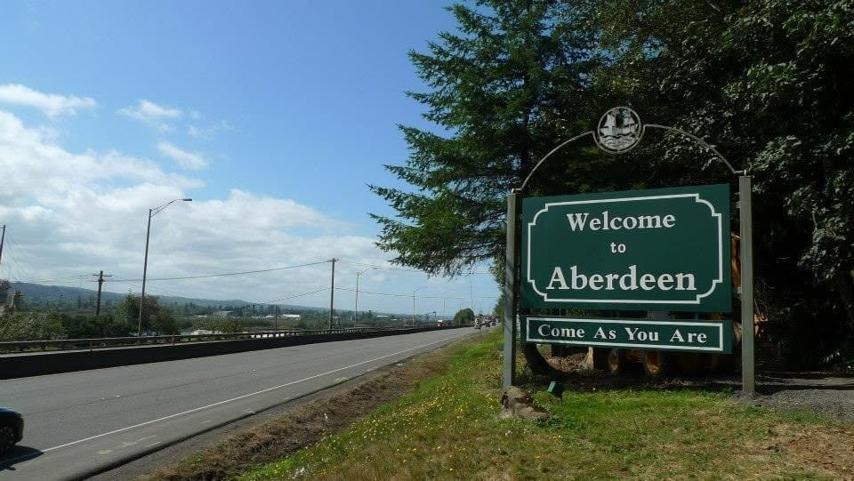
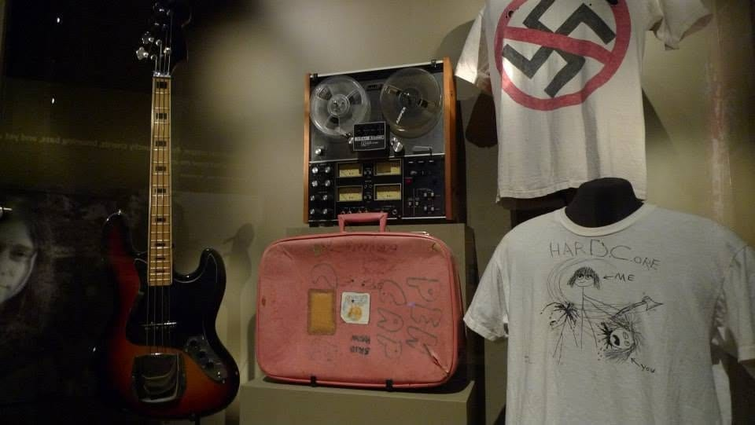
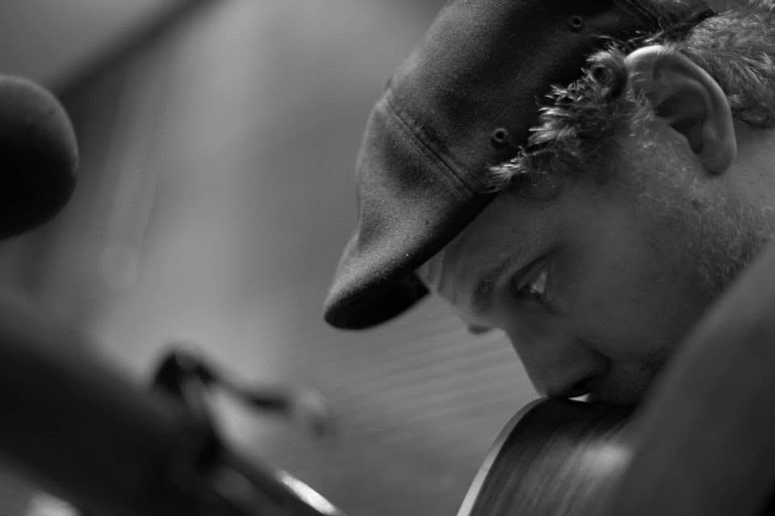
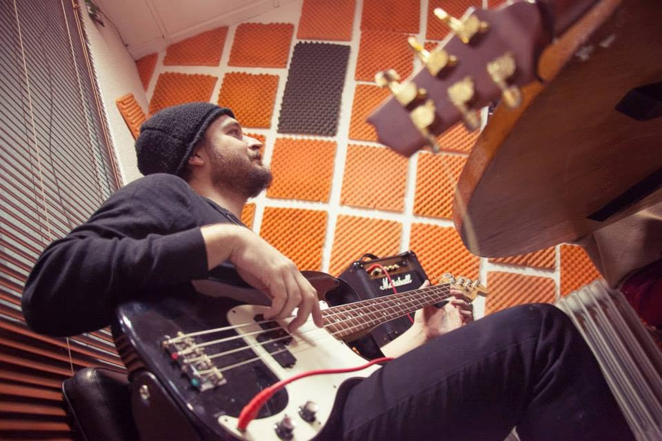

Fotos
Instantáneas de programas emblemáticos de Bienvenido a los 90.
Programa 161 - Un paseo por Seattle — emitido el 14/05/2015

Singles

Black Hole Sun

Hard Rock Cafe Seattle
Programa 147 - Pasajero nos presentan "Parque de atracciones" — emitido el 05/02/2015

Edu

Dani

Radio Utopía
Programa 128 - El "sonido Seattle" en 2014 — emitido el 18/09/2014
The Presidents of the United States of America

Aberdeen

Nirvana: Taking Punk to the Masses
Programa 97 - LE TRASTE — emitido el 09/01/2014

Dani Cabezas

Santi Talavera
Desde Radio Utopía
Programa 82 - DIECISIETE — emitido el 26/09/2013
Susana y Mae
Mae y Susana
Programa 72 - Especial DOVER — emitido el 04/07/2013
Cristina Llanos y Jesús Antúnez
Samuel Titos
Amparo Llanos